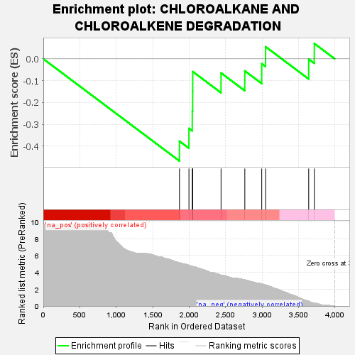
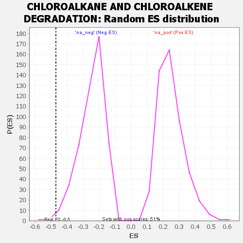

| | | Dataset | GSEA RNK clr Maaslin2 MucosalvsLuminal KO - Duodenum.rnk |
| Phenotype | NoPhenotypeAvailable |
| Upregulated in class | na_neg |
| GeneSet | CHLOROALKANE AND CHLOROALKENE DEGRADATION |
| Enrichment Score (ES) | -0.46838936 |
| Normalized Enrichment Score (NES) | -1.9174528 |
| Nominal p-value | 0.006060606 |
| FDR q-value | 0.04204598 |
| FWER p-Value | 0.36 |
Table: GSEA Results Summary

Fig 1: Enrichment plot: CHLOROALKANE AND CHLOROALKENE DEGRADATION
Profile of the Running ES Score & Positions of GeneSet Members on the Rank Ordered List

Fig 2: CHLOROALKANE AND CHLOROALKENE DEGRADATION: Random ES distribution
Gene set null distribution of ES for CHLOROALKANE AND CHLOROALKENE DEGRADATION